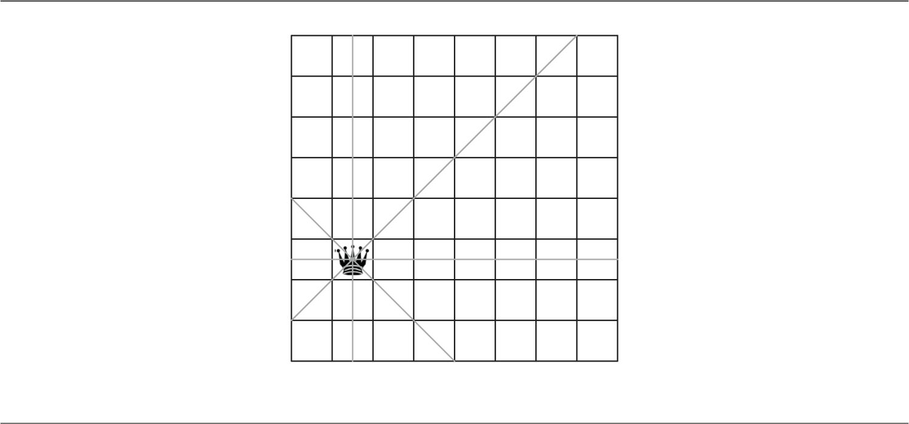
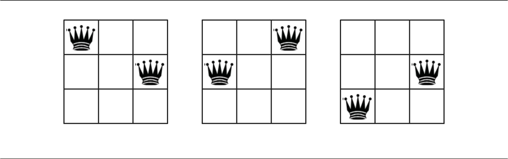
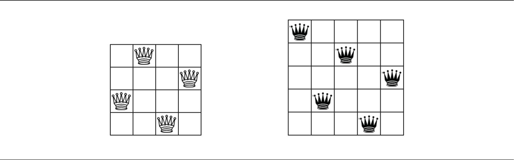
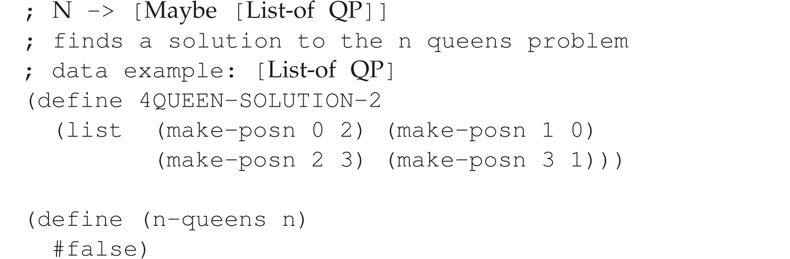
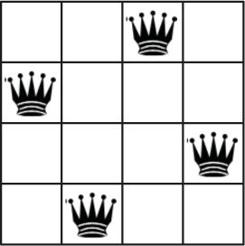
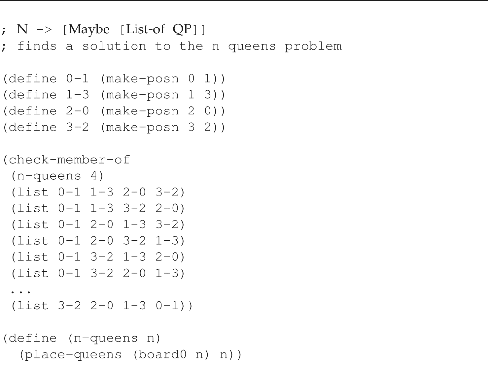
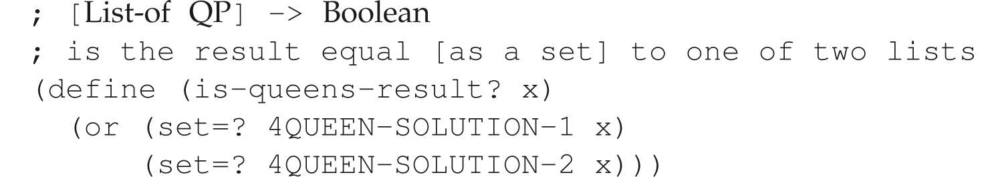

29.2 Project: Backtracking
The n queens puzzle is a famous problem from the world of chess that also illustrates the applicability of backtracking in a natural way. For our purposes, a chess board is a grid of n by n squares. The queen is a game piece that can move in a horizontal, vertical, or diagonal direction arbitrarily far without “jumping” over another piece. We say that a queen threatens a square if it is on the square or can move to it. Figure 172 illustrates the notion in a graphical manner. The queen is in the second column and sixth row. The solid lines radiating out from the queen go through all those squares that are threatened by the queen.

Figure 172: A chess board with a single queen and the positions it threatens
We thank Mark Engelberg for his reformulation of this section.
The classical queens problem is to place 8 queens on an 8 by 8 chess board such that the queens on the board don’t threaten each other. Computer scientists generalize the problem and ask whether it is possible to place n queens on a n by n, chess board such that the queens don’t pose a threat to each other.
For n = 2, the complete puzzle obviously has no solution. A queen placed on any of the four squares threatens all remaining squares.
There is also no solution for n = 3. Figure 173 presents all different placements of two queens, that is, solutions for k = 3 and n = 2. In each case, the left queen occupies a square in the left column while a second queen is placed in one of two squares that the first one does not threaten. The placement of a second queen threatens all remaining, unoccupied squares, meaning it is impossible to place a third queen.

Figure 173: Three queen configurations for a 3 by 3 chess board
Exercise 478. You can also place the first queen in all squares of the top-most row, the right-most column, and the bottom-most row. Explain why all of these solutions are just like the three scenarios depicted in figure 173.
This leaves the central square. Is it possible to place even a second queen after you place one on the central square of a 3 by 3 board? 
Figure 174 displays two solutions for the n queens puzzle: the left one is for n = 4, the right one for n = 5. The figure shows how in each case a solution has one queen in each row and column, which makes sense because a queen threatens the entire row and column that radiate out from its square.

Figure 174: Solutions for the n queens puzzle for 4 by 4 and 5 by 5 boards
Now that we have conducted a sufficiently detailed analysis, we can proceed to the solution phase. The analysis suggests several ideas:
1. The problem is about placing one queen at a time. When we place a queen on a board, we can mark the corresponding rows, columns, and diagonals as unusable for other queens.
2. For another queen, we consider only nonthreatened spots.
3. Just in case this first choice of a spot leads to problems later, we remember what other squares are feasible for placing this queen.
4. If we are supposed to place a queen on a board but no safe squares are left, we backtrack to a previous point in the process where we chose one square over another and try one of the remaining squares.
In short, this solution process is like the “find a path” algorithm.
Moving from the process description to a designed algorithm clearly calls for two data representations: one for the chess boards and one for positions on the board. Let’s start with the latter:
(define QUEENS 8)
; A QP is a structure:
; (make-posn CI CI)
; A CI is an N in [0,QUEENS).
; interpretation (make-posn r c) denotes the square at
; the r-th row and c-th column
After all, the chess board basically dictates the choice.
The definition for CI could use [1,QUEENS] instead of [0, QUEENS), but the two definitions are basically equivalent and counting up from 0 is what programmers do. Similarly, the so-called algebraic notation for chess positions uses the letters 'a through 'h for one of the board’s dimensions, meaning QP could have used CIs and such letters. Again, the two are roughly equivalent and with natural numbers it is easier in ISL+ to create many positions than with letters.
Exercise 479. Design the threatening? function. It consumes two QPs and determines whether queens placed on the two respective squares would threaten each other.
Domain Knowledge (1) Study figure 172. The queen in this figure threatens all squares on the horizontal, the vertical, and the diagonal lines. Conversely, a queen on any square on these lines threatens the queen.
(2) Translate your insights into mathematical conditions that relate the squares’ coordinates to each other. For example, all squares on a horizontal have the same y-coordinate. Similarly, all squares on one diagonal have coordinates whose sums are the same. Which diagonal is that? For the other diagonal, the differences between the two coordinates remain the same. Which diagonal does this idea describe?
Hint Once you have figured out the domain knowledge, formulate a test suite that covers horizontals, verticals, and diagonals. Don’t forget to include arguments for which threatening? must produce #false.
Exercise 480. Design render-queens. The function consumes a natural number n, a list of QPs, and an Image. It produces an image of an n by n chess board with the given image placed according to the given QPs.
You may wish to look for an image for a chess queen on-line or create a simplistic one with the available image functions.
As for a data representation for Boards, we postpone this step until we know how the algorithm implements the process. Doing so is another exercise in data abstraction. Indeed, a data definition for Board isn’t even necessary to state the signature for the algorithm proper:

The complete puzzle is about finding a placement for n queens on an n by n chess board. So clearly, the algorithm consumes nothing else but a natural number, and it produces a representation for the n queen placements—if a solution exists. The latter can be represented with a list of QPs, which is why we choose
; [List-of QP] or #false
as the result. Naturally, #false represents the failure to find a solution.
The next step is to develop examples and to formulate them as tests. We know that n-queens must fail when given 2 or 3. For 4, there are two solutions with real boards and four identical queens. Figure 174 shows one of them, on the left, and the other one is this:

In terms of data representations, however, there are many different ways to represent these two images. Figure 175 sketches some. Fill in the rest.

Figure 175: Solutions for the 4 queens puzzle
Exercise 481. The tests in figure 175 are awful. No real-world programmer ever spells out all these possible outcomes.
One solution is to use property testing again. Design the n-queens-solution? function, which consumes a natural number n and produces a predicate on queen placements that determines whether a given placement is a solution to an n queens puzzle:
• A solution for an n queens puzzle must have length n.
• A QP on such a list may not threaten any other, distinct QP.
Once you have tested this predicate, use it and check-satisfied to formulate the tests for n-queens.
An alternative solution is to understand the lists of QPs as sets. If two lists contain the same QPs in different order, they are equivalent as the figure suggests. Hence you could formulate the test for n-queens as

Design the function set=?. It consumes two lists and determines whether they contain the same items—regardless of order.
Exercise 482. The key idea to is to design a function that places n queens on a chess board that may already contain some queens:
; Board N -> [Maybe [List-of QP]]
; places n queens on board; otherwise, returns #false
(define (place-queens a-board n)
#false)
Figure 175 already refers to this function in the definition of n-queens.
Design the place-queens algorithm. Assume you have the following functions to deal with Boards:
; N -> Board
; creates the initial n by n board
(define (board0 n) …)
; Board QP -> Board
; places a queen at qp on a-board
(define (add-queen a-board qp)
a-board)
; Board -> [List-of QP]
; finds spots where it is still safe to place a queen
(define (find-open-spots a-board)
'())
The first function is used in figure 175 to create the initial board representation for place-queens. You will need the other two to describe the generative steps for the algorithm.
You cannot confirm yet that your solution to the preceding exercise works because it relies on an extensive wish list. It calls for a data representation of Boards that supports the three functions on the wish list. This, then, is your remaining problem.
Exercise 483. Develop a data definition for Board and design the three functions specified in exercise 482. Consider the following ideas:
• a Board collects those positions where a queen can still be placed;
• a Board contains the list of positions where a queen has been placed;
• a Board is a grid of n by n squares, each possibly occupied by a queen. Use a structure with three fields to represent a square: one for x, one for y, and a third one saying whether the square is threatened.
Use one of the above ideas to solve this exercise.
Challenge Use all three ideas to come up with three different data representations of Board. Abstract your solution to exercise 482 and confirm that it works with any of your data representations of Board.